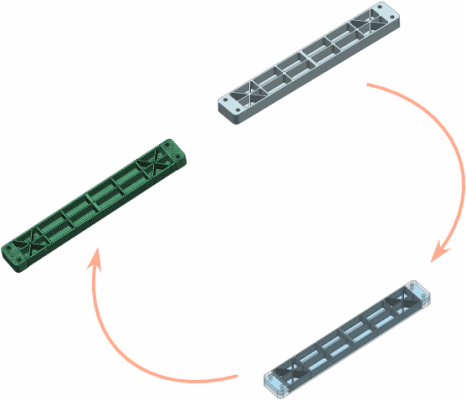

对于某些类型的部件，可以通过在实体上创建中面的方式来简化几何体，以进行 CAE 分析。使用中面工具条上的命令可创建 CAD 几何体的简化体，方法是在曲面对之间生成部件中间曲面的近似体。然后可直接对该中面执行 CAE 分析，而不用对原始实体模型执行分析：
用于简化模型以进行分析
最适合薄壁部件
可直接在 CAD 几何体上创建，也可在理想化部件上创建
通常作为多步骤过程的一部分而创建。创建组成部件中面的所有必需中间片体后，可能需要使用其他建模或多边形几何体命令来确保中面完全缝合
要使用中面命令，必须让理想化部件显示在图形窗口中。
要修改理想化部件，必须先使用提升或 WAVE 链接几何体命令。
